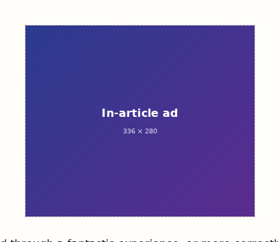
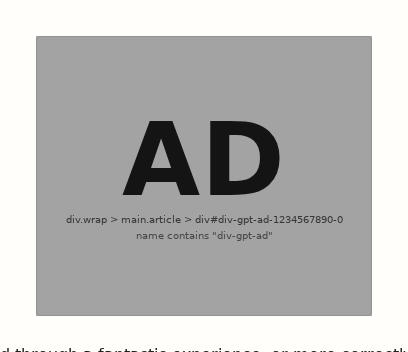

–
ads covered on this page
Ads still load and still work — they are only hidden behind a gray box. Hover a box to peek behind it, click one to hide that cover until the ad changes. No requests are blocked and no trackers are touched.

